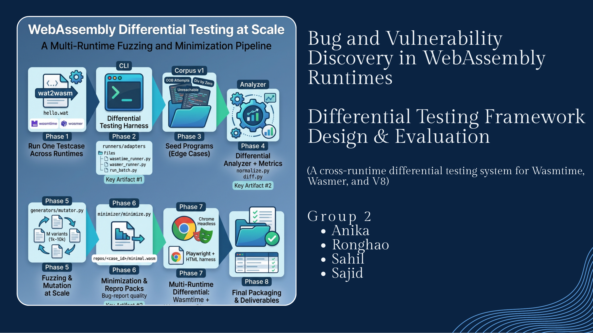

Security Testing / WebAssembly
Bug and vulnerability discovery in WebAssembly runtimes
A differential testing framework for WebAssembly runtimes that compares behavior across Wasmtime, Wasmer, and V8.

Project objective
The goal was to build an end-to-end differential testing framework that executes the same WebAssembly program across multiple runtimes, captures execution behavior, normalizes runtime-specific outputs, and detects behavioral mismatches.

What the framework captures
- Runtime outputs including stdout, stderr, exit codes, and execution time.
- Normalized outcomes such as ok, trap, validation_error, and runtime_error.
- Structured artifacts including summary.json, mismatches.json, and metrics.md.
- Compiler-generated corpora by compiling C programs into WebAssembly with clang.
Why differential testing works
If multiple runtimes receive the same input but produce different categories of behavior, that mismatch becomes a signal worth investigating. The value is not just running tests; it is creating a pipeline where mismatches can be minimized, reproduced, and analyzed.
This kind of security engineering sits at the boundary of systems, testing, and developer tooling: build a harness, generate realistic inputs, compare behavior, and package results so bugs become actionable.
Deep-dive artifact: view the WebAssembly vulnerability testing PDF.
React or ask a follow-up
Comments and reactions are powered by GitHub Discussions under the connectwithsajid brand.